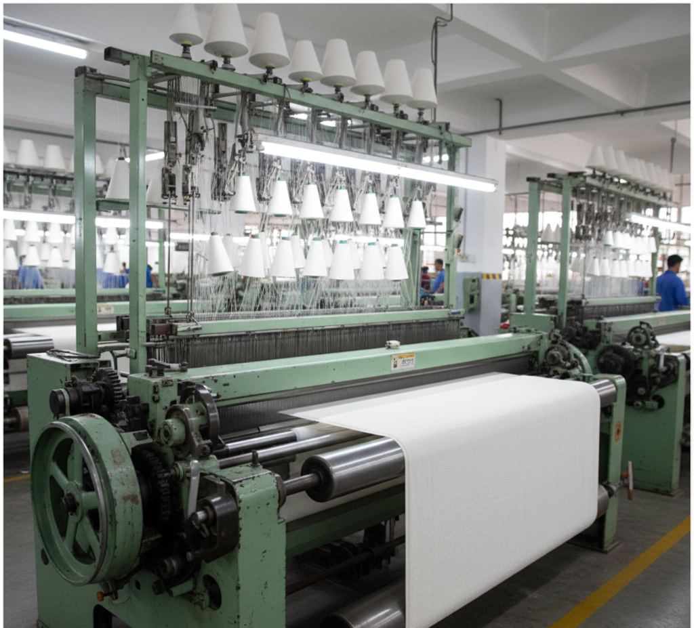
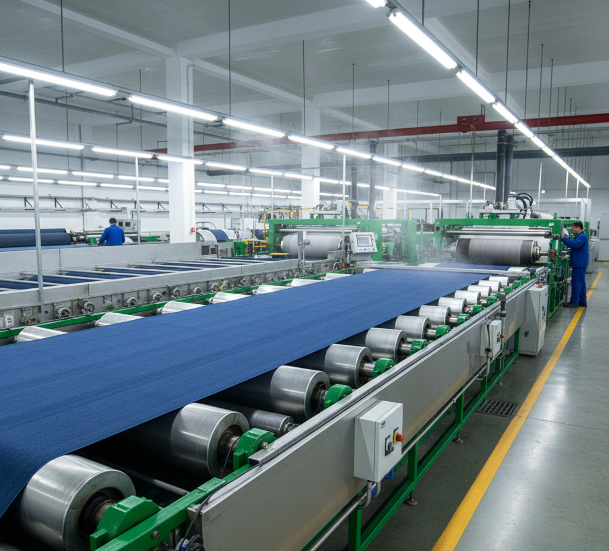
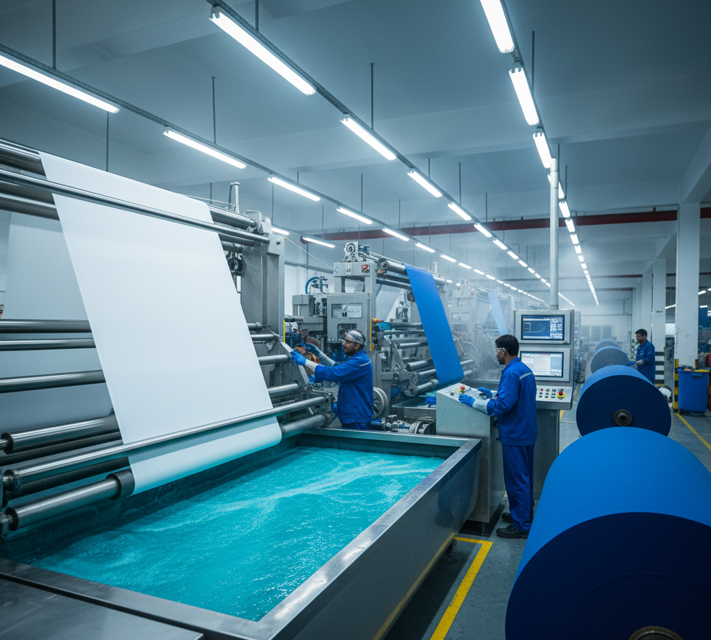
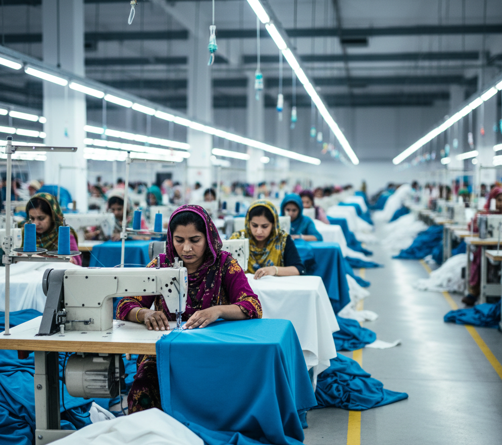

Company Setup
An overview of our weaving, processing, dyeing, and export operations.

Weaving
Weaving is the first step in our supply chain. Through our manufacturing partner Waris Textile, we source high-quality woven fabrics produced on modern looms—from plain and twill to dobby and jacquard constructions. This gives our clients access to consistent, export-grade fabrics suitable for apparel, home textiles, and technical applications, with the flexibility to meet diverse specifications and volumes.
Processing
Processing is the next step after weaving. Through our partner Waris Textile, we offer fabric processing that delivers the right hand feel, appearance, and performance—including desizing, scouring, bleaching, mercerization, and finishing. We work with both natural and synthetic blends to meet the exact specifications our clients need for their end applications.


Dyeing and Printing
After processing, fabrics move to dyeing and printing. Through our partner Waris Textile, we deliver vibrant, colorfast results for a wide range of products—using eco-friendly dyes and pigments and adhering to compliance standards for export markets. Whether you need solid colors or custom prints, we ensure accurate shade matching and repeatability for bulk orders.
Stitching
Stitching and assembly follow dyeing and printing. Through our partner Waris Textile, we offer cut-and-sew operations for bedding, towels, apparel, and institutional textiles. Skilled workers and quality checks at each stage ensure that finished products meet your design and durability requirements before shipment.

Quality and Packaging
Quality and packaging are the final step before delivery. Through our partner Waris Textile, quality control runs through every stage of production—with inline and final inspections for dimensions, color, strength, and finish. Approved goods are packed to your specifications (folded, poly-packed, cartoned, or palletized) for safe and professional delivery to your destination.